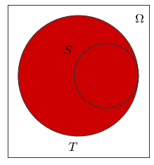

2.3. Relazioni tra insiemi¶
A partire dalla nozione di sottoinsieme è possibile derivare una serie di relazioni tra insiemi di carattere generale; più precisamente:
quando ogni elemento sappartenente a un insieme \(S\) risulta appartenente anche a un secondo insieme \(T\), si dice che \(S\) è un sottoinsieme di \(T\) (o che \(S\) è incluso in \(T\)) e si indica questo fatto con la notazione \(S \subseteq T\) (vedi Fig. 2.3):
fig = subset_venn()
glue("venn-subset-picture", fig, display=False)

Fig. 2.3 Un diagramma di Venn per descrivere due insiemi \(S\) e \(T\) tali che \(S \subseteq T\).¶
due insiemi si dicono uguali quando si includono mutuamente:
due insiemi si dicono diversi quando non sono uguali;
tra due insiemi sussiste la relazione di inclusione in senso stretto quando uno dei due è incluso nell’altro e in aggiunta i due insiemi non sono uguali:
Si verifica facilmente come qualunque insieme risulti sempre incluso nell’insieme universo, e come analogamente l’insieme vuoto risulti sempre incluso in qualunque insieme:
e questa relazione continua a valere se si considera la relazione di inclusione in senso stretto, a patto che \(S\) sia diverso dall’insieme vuoto (affinché valga la prima parte della relazione) e dall’insieme universo (affinché possa valere la sua seconda parte).